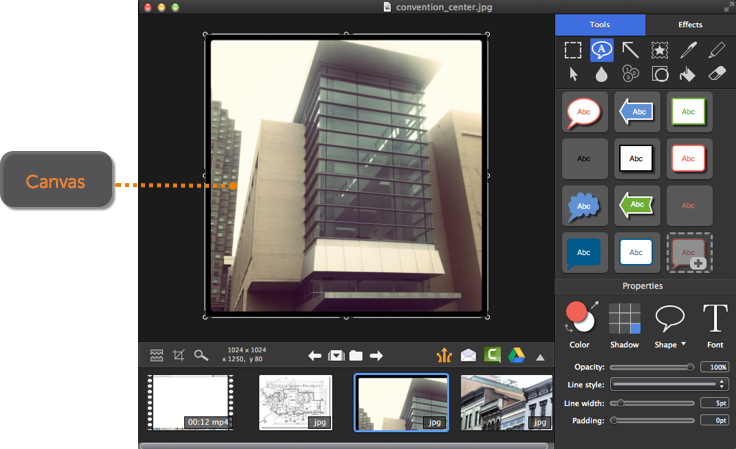
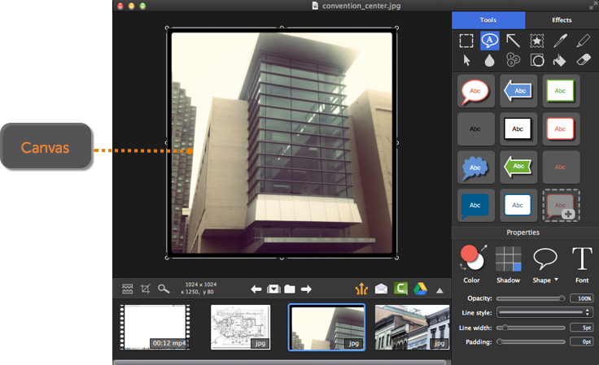

Canvas
Canvas
The canvas is the area for previewing and editing captures. The canvas displays the capture selected within the tray.

The canvas is the area for previewing and editing captures. The canvas displays the capture selected within the tray.

To learn more about working on the canvas, see: